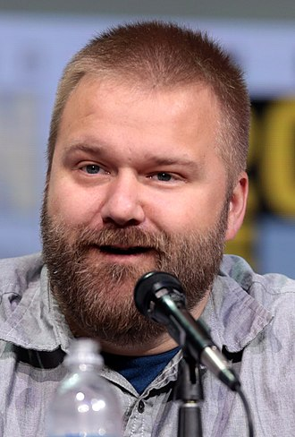

Robert Kirkman is an American comic book writer best known for creating The Walking Dead, Invincible, Tech Jacket, Outcast and Oblivion Song for Image Comics, in addition to writing Ultimate X-Men, Irredeemable Ant-Man and Marvel Zombies for Marvel Comics. He has also collaborated with Image Comics co-founder Todd McFarlane on the series Haunt. He is one of the five partners of Image Comics, and the only one of the five who was not one of its co-founders.